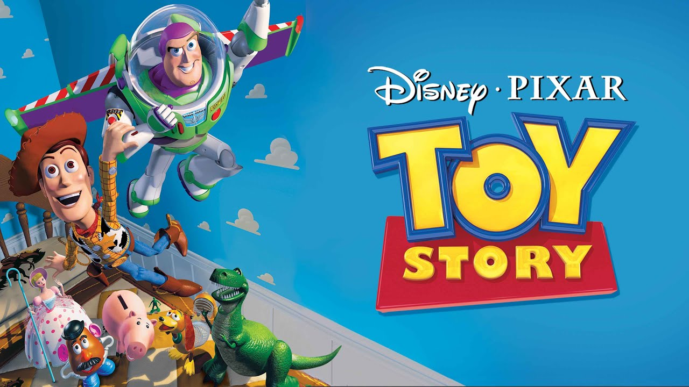
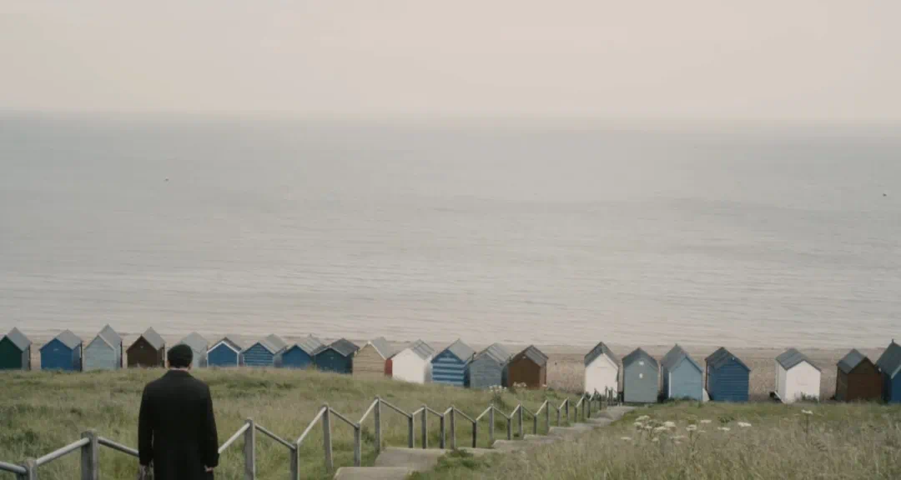

Classical Interpretations
From Chopin’s Nocturnes to Liszt’s concert pieces—my approach focuses on clarity of voicing and narrative pacing. Highlights include Hungarian Rhapsody No.2 and Waltz Op.64 No.1.
Watch PlaylistClassical interpretations, jazz improvisations, film themes, and original works.
From Chopin’s Nocturnes to Liszt’s concert pieces—my approach focuses on clarity of voicing and narrative pacing. Highlights include Hungarian Rhapsody No.2 and Waltz Op.64 No.1.
Watch PlaylistStandards and reharmonizations—swing feel, modal colors, and melodic improv. Check out Autumn Leaves (trio), Misty, and my two-part “When Chopin Meets Swing.”
Watch Playlist
Arrangements that balance fidelity and flair—Disney, La La Land, and Broadway favorites. Try You’ve Got a Friend in Me or Another Day of Sun.
Watch Playlist
Compositions that blend classical structure with jazz harmony. Don’t miss my album The Seasons and the UWC piece Another Day of School.
Watch Playlist